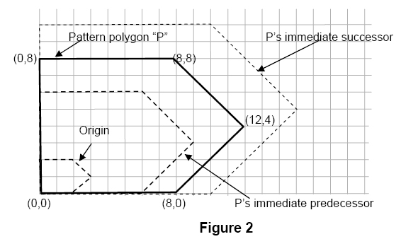

World Finals - Tokyo - 2006/2007
| 2395 - Jacquard Circuits World Finals - Tokyo - 2006/2007 | ||||
| Submit | Ranking | ||||
The eccentric sculptor Albrecht Caravaggio Mondrian has been inspired by the history of the computer to create works of art that he calls ``Jacquard circuits." Each of his works of art consists of a series of polygonal circuit boards (defined below), all having the same shape but at different scales, joined together with wire or string into a three-dimensional tiered structure. Figure 1 below shows an example with two levels and a pentagonal shape.
A.C.M. (as he is known to his friends) bases his art upon the punched hole cards of the Jacquard loom (that were later adapted by Charles Babbage for his analytical engine) and upon the regular grid layout approach often used in circuit interfacing (for instance, Pin Grid Arrays).
The circuit boards used in the sculptures are in the shapes of lattice polygons. A lattice polygon is defined as any closed, non-self-intersecting cycle of straight line segments that join points with integer coordinates, with no two consecutive line segments parallel. For any given lattice polygon P
To build one of his sculptures, A.C.M. begins by randomly selecting N
The hard part of creating the sculpture is tying together all the strings or wires that meet at a given hole. Furthermore, some of A.C.M.'s famous miniaturized sculptures, built using nano-engineering techniques, involve hundreds of thousands of levels. Mondrian would like a way to determine, given a polygonal shape and the number of levels, how many holes there will be in the final sculpture. You must write a program to help him. (For example, the sculpture in Figure 1 above has 15 holes.) Assume holes have zero diameter.
The input consists of one or more test cases. Each case begins with a line containing two positive integers N
The last test case is followed by a line containing two zeroes.
For each test case, print a line containing the test case number (beginning with 1) followed by the number of holes in an M
Tests-Setter: Shahriar Manzoor

Input
 N
N 1000)
1000)
 M
M 1000000)
1000000)
 1000000)
1000000)
Output
Sample Input
5 2
0 0
8 0
12 4
8 8
0 8
3 2
-1 -1
3 1
5 -1
0 0
Sample Output
Case 1: 15
Case 2: 2
Tokyo 2006-2007